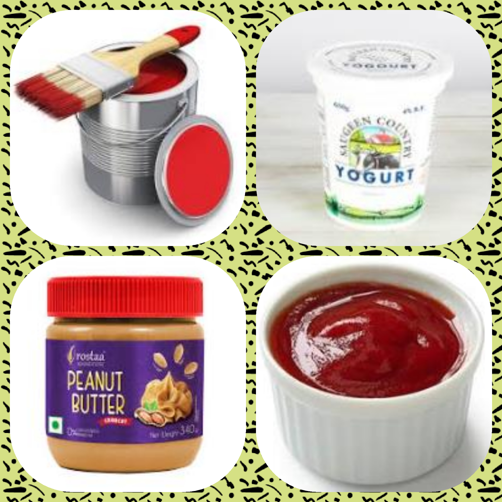
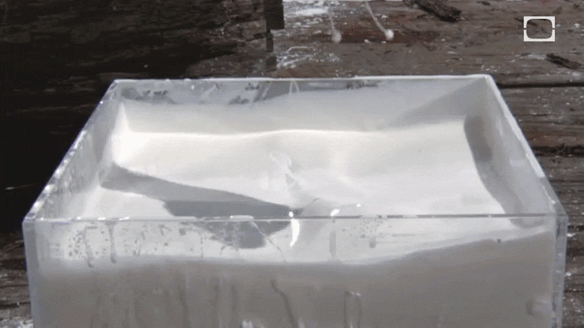
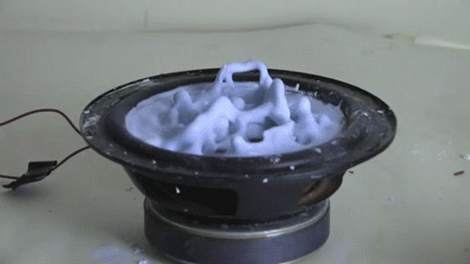

What is Non-Newtonian fluid?

A non-Newtonian fluid is a fluid whose viscosity is variable based on applied stress or force. The most
common everyday example of a non-Newtonian fluid is cornstarch dissolved in water. Behavior of
Newtonian fluids like water can be described exclusively by temperature and pressure. However, the
physical behavior of non-Newtonian fluid depends on the forces acting on it from second to second.
Interesting properties of Non-Newtonian fluids

If you punch a bucket full of non-Newtonian fluid such as cornstarch, the stress introduced by the
incoming force causes the atoms in the fluid to rearrange such that it behaves like a solid. Your hand will
not go through. If you shove your hand into the fluid slowly, however, it will penetrate successfully. If you
pull your hand out abruptly, it will again behave like a solid, and you can literally pull a bucket of the fluid
out of its container in this way. Non-Newtonian fluids help us understand the wide variety of fluids that
exist in the physical world.

A search for non-Newtonian fluid on the internet brings up some interesting results. When combined with
a oscillating plate, non-Newtonian fluids demonstrate other unusual properties, like protruding "fingers"
and holes that persist after creating them. An oscillating plate applies stress on a periodic basis, rapidly
changing the viscosity of the fluid and putting it in an odd middle ground between a liquid and a solid. At
the same time, there are examples wherein one can place a bowl of cornstarch near a vibrating speaker
to see the interesting patterns that are created on the surface of the mixture.
Physics of Non-Newtonian fluids
To define it scientifically, a non-Newtonian fluid is a fluid whose flow properties are not described by a
single constant value of viscosity. Many polymer solutions and molten polymers are non-Newtonian
fluids, as are many commonly found substances such as ketchup, starch suspensions, paint, and
shampoo. In a Newtonian fluid, the relation between the shear stress and the strain rate is linear, the
constant of proportionality being the coefficient of viscosity. In a non-Newtonian fluid, the relation
between the shear stress and the strain rate is nonlinear, and can even be time-dependent. Therefore a
constant coefficient of viscosity cannot be defined.
Goal of experiment
Prepare a Non-Newtonian fluid – cornstarch and understand its properties.